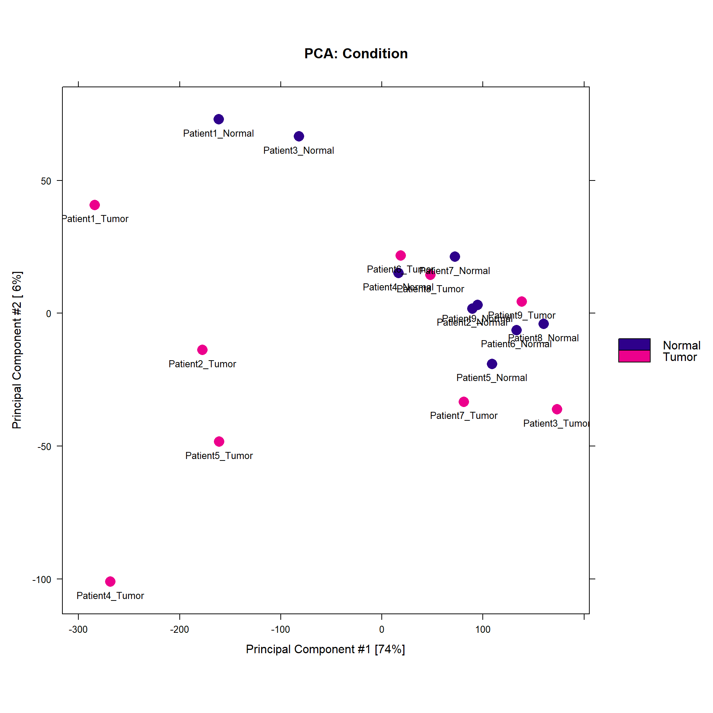
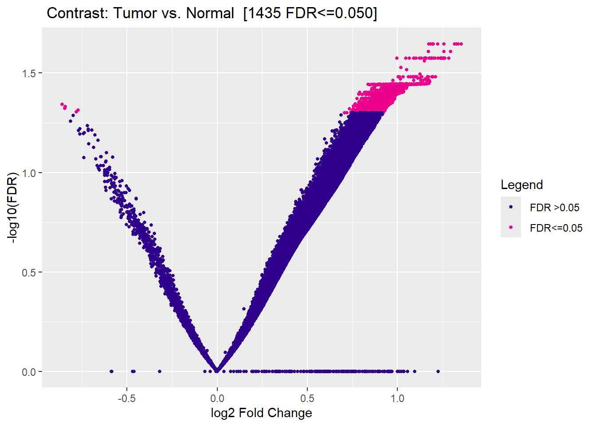
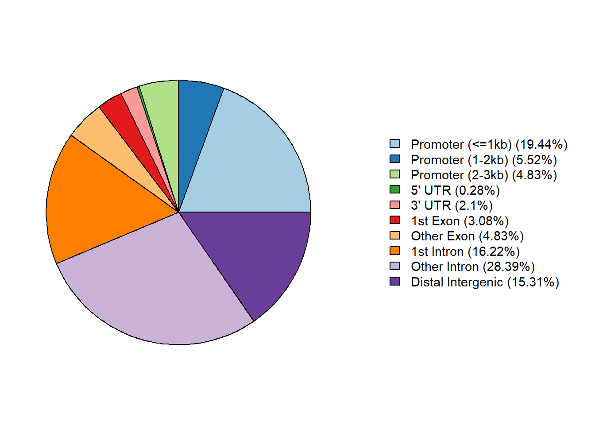
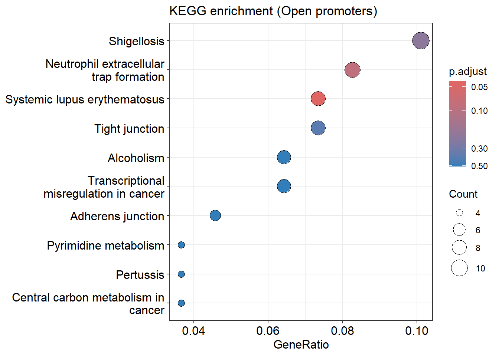

PROJECT
ATAC-seq & RNA-seq Analysis of TNBC
Integrated chromatin accessibility and gene expression analysis to identify regulatory changes associated with triple-negative breast cancer.
Project Summary
This project used publicly available sequencing data to analyze regulatory changes in triple-negative breast cancer. ATAC-seq was used to identify differential chromatin accessibility between tumor and normal samples, while RNA-seq was used as a validation step to compare accessibility changes with gene expression changes.
Key Findings
1,435
Significant differentially accessible regions identified at FDR < 0.05.
Open Chromatin
Most significant regions showed increased accessibility in tumor samples.
Pathway Signals
GSEA highlighted hormone response, KRAS signaling, immune response, and cell adhesion pathways.
RNA Validation
ATAC open genes significantly overlapped with RNA upregulated genes.
Basic Workflow Diagram

Visualization Gallery

MA Plot
Shows differential accessibility patterns between tumor and normal samples.

Volcano Plot
Highlights significant regions based on fold change and FDR.

Peak Annotation
Summarizes genomic distribution of differentially accessible peaks.

KEGG / GSEA Enrichment
Identifies biological pathways associated with open chromatin regions.
Biological Interpretation
The analysis suggests that tumor samples contain widespread increases in chromatin accessibility, especially around regulatory regions linked to cancer-related signaling and immune pathways. RNA-seq validation further supports the relationship between open chromatin and increased gene expression in tumor samples.